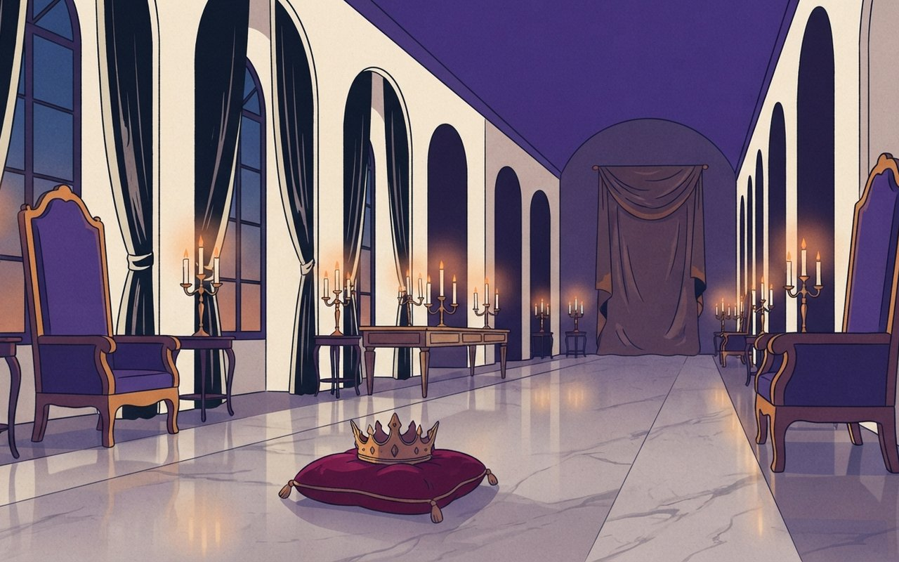
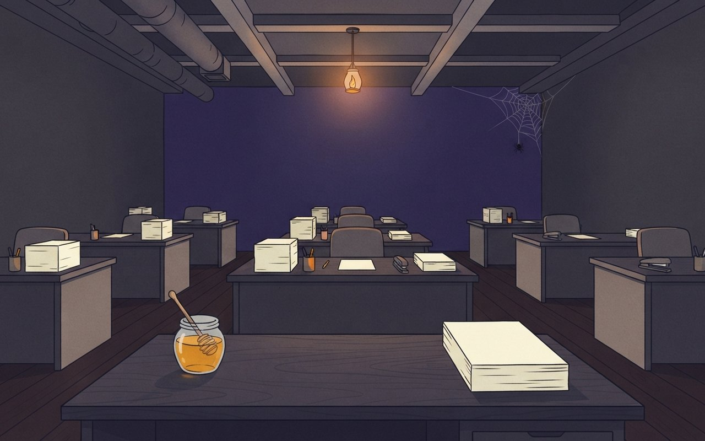
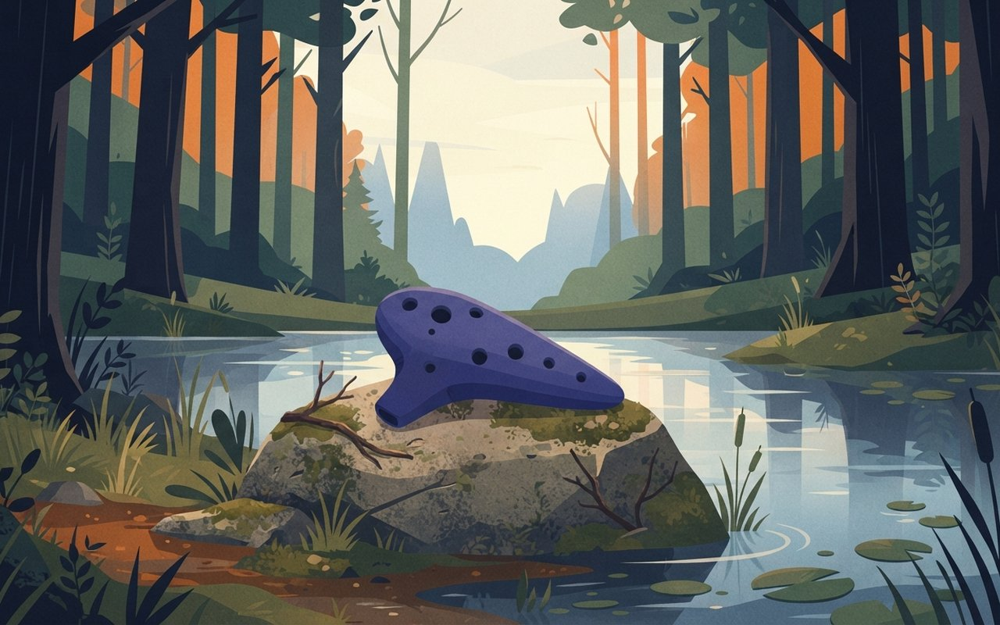

2026년 11월 4일 수요일 · OTT·게임·웹툰 브리프4 Picks · 시리즈 2 · 게임 2
디즈니플러스 〈재혼 황후〉가 오늘(11월 4일) 공개됩니다. 지난달 30일 공개된 넷플릭스 〈꿀알바〉는 하루 만에 국내 시리즈 1위에 올랐습니다. 내일 5일에는 닌텐도 스위치2 〈젤다의 전설 시간의 오카리나〉와 〈월드 오브 워크래프트: 포에버〉가 나옵니다. 이번 호는 본문까지 확인된 소식만 4건을 실었고, 웹툰 완결 소식과 티빙·쿠팡플레이 신작은 확인된 기사가 없어 싣지 않았습니다.
🎧 듣기 · 약 2분
🎧 낭독 원고 보기
11월 4일 수요일, OTT·게임·웹툰 브리프입니다.
황후가 이혼을 통보받고 오히려 재혼을 허락해 달라고 합니다. 웹툰 원작 재혼 황후가 오늘 디즈니플러스에서 공개됩니다. 신민아, 주지훈, 이종석, 이세영이 출연하는 10부작이고, 원작의 글로벌 누적 조회수는 29억 7천만 회입니다. 부산국제영화제 상영 티켓은 전석 매진됐습니다. 몰아보기인지 주간 공개인지는 기사에 없으니 앱에서 확인해 주세요.
넷플릭스 꿀알바는 30일 오후 5시에 8부작이 한꺼번에 공개됐고, 하루 만인 31일 오후 국내 시리즈 순위 1위에 올랐습니다. 직전 1위였던 SBS 닥터X는 2위로 내려왔습니다. 일간 순위라서 주간 집계와는 다를 수 있습니다.
내일 5일에는 젤다의 전설 시간의 오카리나가 닌텐도 스위치2 독점 리메이크로 나옵니다. 카메라를 360도 돌릴 수 있고, 마이크에 허밍을 하면 링크가 오카리나로 연주합니다. 일본 가격은 다운로드판 7,980엔, 패키지판 8,980엔입니다. 한국 가격은 기사에서 확인하지 못했습니다.
같은 날 한국 시간 오전 8시에는 월드 오브 워크래프트 포에버가 전 세계 동시에 출시됩니다. 이용하려면 구독이나 게임 시간이 필요합니다.
지금까지 11월 4일 OTT·게임·웹툰 브리프였습니다. 공개일과 시각, 가격은 바뀔 수 있으니 각 플랫폼에서 확인해 주세요. 좋은 하루 보내세요.
Series — 오늘 공개
后
디즈니+ 오늘
〈재혼 황후〉 오늘 디즈니+ 공개 — 신민아·주지훈·이종석·이세영, 원작 조회수 29억 7천만 회
웹툰·웹소설 원작 〈재혼 황후〉가 오늘 11월 4일 디즈니플러스에서 공개된다. 황후 나비에(신민아)가 황제 소비에슈(주지훈)에게 이혼을 통보받은 뒤 재혼 승인을 요구하며 판을 뒤집는 이야기다. 이종석이 서왕국 왕자 하인리, 이세영이 라스타를 맡았다. 총 10부작, 연출은 조수원, 극본은 여지나다(위키트리 10/19).
원작은 2018년 웹소설로 시작해 웹툰으로 확장됐고 10개 언어로 번역됐다. 글로벌 누적 조회수는 7월 기준 29억 7천만 회다. 제31회 부산국제영화제 온 스크린 섹션 상영 티켓은 예매 오픈과 동시에 전석 매진됐다. 디즈니+는 메인 예고편이 24시간 만에 1,170만 뷰를 기록해 한국 오리지널 예고편 가운데 최단 시간 최고 조회수라고 밝혔다(위키트리 9/22).
공개11월 4일(수) 디즈니플러스 ⚠ 변동 가능
출연신민아(나비에) · 주지훈(소비에슈) · 이종석(하인리) · 이세영(라스타)
회차10부작 — 몰아보기/주간 공개 여부는 기사에 없음
제작연출 조수원 · 극본 여지나
화제성예고편 24시간 1,170만 뷰(디즈니+ 집계) · BIFF 상영 티켓 전석 매진 · 원작 누적 29억 7천만 회
📺 알고 보면 달라지는 것
공개 방식이 기사에 없으니, 한 번에 몰아볼지 매주 볼지는 오늘 디즈니플러스 앱의 작품 페이지에서 확인하고 구독 시점을 정하는 편이 낫다. 예고편 조회수는 디즈니+가 밝힌 숫자이고, 온라인에서는 실사화 어색함을 우려하는 반응도 함께 나왔다.
위키트리 — 공개일·출연·회차(10/19)위키트리 — 예고편·원작 조회수(9/22)공개일·배역·10부작·연출·극본·BIFF 온 스크린 초청은 위키트리 10/19 기사, 전석 매진·예고편 1,170만 뷰·최단 시간 최고 조회수·원작 29억 7천만 회(7월 기준)는 위키트리 9/22 기사(디즈니+ 발표 인용) · 공개 방식(몰아보기/주간)은 두 기사에 없어 미확인 (확인 2026-11-04)
재혼 황후, 오늘 공개 디즈니+ 10부작
황후 나비에(신민아)가 이혼 통보에 재혼 승인을 요구하는 이야기예요. 오늘 디즈니플러스에서 공개돼요. 몰아보기인지는 앱에서 확인하세요.
11/4
An empty candlelit palace hall at dusk, two ornate empty chairs facing each other across a long marble floor, a golden crown resting on a velvet cushion, tall windows with heavy curtains, no people, no text

Series — 국내 순위
蜜
넷플릭스 일간
〈꿀알바〉 공개 하루 만에 넷플릭스 국내 시리즈 1위 — 〈닥터X〉는 2위로
넷플릭스 〈꿀알바〉가 10월 30일 오후 5시 8부작 전편이 공개됐고, 31일 오후 기준 넷플릭스 '오늘 대한민국의 TOP 10 시리즈' 1위에 올랐다(위키트리 10/31). 직전 1위는 SBS 금토드라마 〈닥터X: 하얀 마피아의 시대〉로, 6회에서 닐슨코리아 전국 가구 기준 자체 최고 19.5%를 기록한 작품이다.
시급 50배를 내세운 수상한 인력사무소를 배경으로, 청년 혁준(이재욱)이 매회 다른 아르바이트 현장에서 겪는 공포를 그린 생계형 호러다. 연출은 김다민, 청소년 관람불가 등급이다.
1위꿀알바 (31일 오후 기준)
2위닥터X: 하얀 마피아의 시대
3~5위나는 솔로 · 100일의 거짓말 · 지구마불 세계여행
공개10월 30일 오후 5시 8부작 전편 · 청소년 관람불가
📺 알고 보면 달라지는 것
이 순위는 그날 오후 기준 국내 일간 순위다. 주간 집계나 글로벌 순위와는 다를 수 있어, 첫 주 성적은 넷플릭스가 따로 발표하는 주간 톱10까지 봐야 한다.
위키트리 — 31일 넷플릭스 국내 순위공개 시각·8부작·1~5위·닥터X 19.5%·등급은 위키트리 10/31 14:29 기사 단일 · 순위는 31일 오후 기준 일간 순위이며 주간·글로벌 수치는 확인하지 못해 싣지 않았다 (확인 2026-11-04)
넷플릭스 꿀알바 하루 만에 국내 1위
넷플릭스 꿀알바가 31일 오후 국내 시리즈 1위예요. 2위 닥터X, 3~5위는 나는 솔로·100일의 거짓말·지구마불 세계여행이에요.
8부작|10/30 오후 5시 전편 공개
A dim employment office at night with a single flickering ceiling lamp, rows of empty desks with stacks of blank papers, a jar of golden honey on the front desk and a spider web in the corner, no people, no logos, no text

Game — 내일 5일 출시
笛
스위치2 5일
〈젤다의 전설 시간의 오카리나〉 내일 출시 — 스위치2 독점, 허밍으로 오카리나 연주
1998년 닌텐도64 원작을 다시 만든 〈젤다의 전설 시간의 오카리나〉가 11월 5일 닌텐도 스위치2 독점으로 출시된다(뉴시스 9/9). 오른쪽 스틱으로 카메라를 360도 돌릴 수 있고, 자동이던 점프를 버튼으로 직접 하며, 길게 누르면 달리는 대시가 추가됐다. 시점이 고정이던 하이랄성 아랫마을은 자유롭게 돌아다닐 수 있다.
마이크에 콧노래를 부르면 링크가 이를 음으로 인식해 오카리나로 연주한다(뉴시스·디지털데일리). 원작은 메타크리틱 평론가 평점 99점이다. 일본 가격은 다운로드판 7,980엔, 패키지판 8,980엔이고, 한국 가격은 두 기사에 없다.
출시11월 5일(목) · 닌텐도 스위치2 독점
달라진 점카메라 360도 · 점프 직접 조작 · 대시 · 마을 자유 탐험
연주마이크 허밍을 오카리나 음으로 인식
일본 가격다운로드 7,980엔 · 패키지 8,980엔 (한국 가격 미확인) ⚠ 변동 가능
📺 알고 보면 달라지는 것
연주를 마이크로 하는 게임이라, 조용한 곳이 아니면 주변 소리가 섞일 수 있다. 한국 가격은 기사에 없으니 결제 전 닌텐도 e숍에서 직접 확인한다.
뉴시스 — 출시일·변경점(9/9)디지털데일리 — 일본 가격·원작 평점(9/9)출시일 11/5·스위치2 독점·변경점·허밍 연주는 뉴시스 9/9, 일본 가격·메타크리틱 99점·허밍은 디지털데일리 9/9 · 한국 가격은 블로그 단일 정보뿐이라 싣지 않았다 · '주변 소리가 섞일 수 있다'는 마이크 방식에서 오는 편집자 일반 주의(기사 내용 아님) (확인 2026-11-04)
젤다 시간의 오카리나 내일 5일 출시
젤다의 전설 시간의 오카리나가 내일 스위치2로 나와요. 마이크에 허밍을 하면 오카리나로 연주해요. 일본 가격은 7,980엔부터예요.
11/5
A small blue clay ocarina resting on a mossy stone beside a quiet forest pond at dawn, soft light through tall trees, no people, no logos, no text

戰
MMO 신작
〈월드 오브 워크래프트: 포에버〉 내일 오전 8시 전 세계 동시 출시
블리자드는 〈월드 오브 워크래프트: 포에버〉를 한국 시간 11월 5일 오전 8시에 전 세계 동시 출시한다고 안내했다. 이용하려면 WoW 구독 서비스나 게임 시간이 필요하다.
소장판에는 디지털 코드가 들어 있어 스카이본 신화 꾸러미, 워크래프트 III: 리포지드, 포세이큰 왕국이 해제된다. 소장판은 현지 소매업체에서, 디지털 꾸러미는 Battle.net 샵에서 판다. 가격은 블리자드 안내 본문에 없다.
출시11월 5일(목) 오전 8시(한국 시간) · 전 세계 동시
이용 조건WoW 구독 또는 게임 시간
구매소장판(현지 소매업체) · 디지털 꾸러미(Battle.net 샵) · 가격 미확인
📺 알고 보면 달라지는 것
출시 시각이 출근·등교 시간인 오전 8시다. 서버 접속은 몰릴 수 있으니 구독 상태와 게임 시간은 미리 확인해 둔다.
블리자드 — 출시 시각·구매 방식블리자드 — WoW 주간 소식출시 시각(KST 오전 8시)은 블리자드 두 페이지 일치, 이용 조건·소장판 코드는 블리자드 24302498 · 두 페이지 모두 게시일 표시 없음 · 가격은 본문에 없어 싣지 않았다 · 접속 몰림은 일반적 주의로 단정하지 않았다 (확인 2026-11-04)
WoW 포에버 내일 오전 8시 출시
월드 오브 워크래프트 포에버가 내일 한국 시간 오전 8시에 전 세계에서 동시에 나와요. 하려면 구독이나 게임 시간이 필요해요. 가격은 안내에 없어요.
전 세계 동시|11/5 한국 시간 출시
A lone stone watchtower on a misty mountain ridge at sunrise, a glowing blue crystal on the horizon, fantasy landscape painting style, no people, no logos, no text